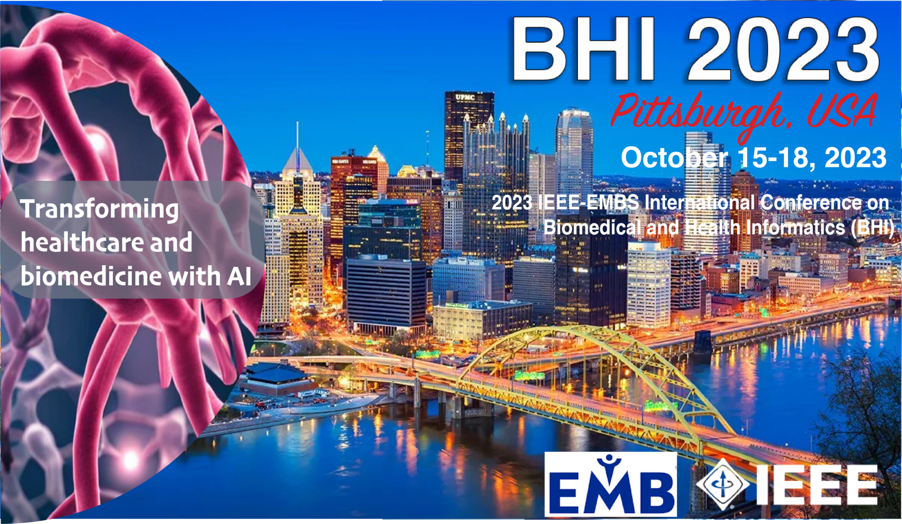

This website hosts Open Access versions of the papers from the Biomedical Health Informatics conferences with the goal of timely dissemination of engineering and scientific knowledge.
The papers published here are mostly identical to the papers published on IEEE Xplore. Copyright and all rights therein are retained by authors or by other copyright holders. All persons copying this information are expected to adhere to the terms and constraints invoked by each author's copyright.

The IEEE-EMBS International Conference on Biomedical and Health Informatics (BHI), sponsored by the IEEE Engineering in Medicine and Biology Society (IEEEEMBS), is EMBS’s primary technical conference on informatics and computing in healthcare and life sciences. BHI 2023 will take place in Pittsburgh, Pennsylvania from October 15-18, 2023. It will provide a unique forum to showcase basic and translational research on big data analytics and machine learning that address challenges in the acquisition, transmission, processing, security, visualization, and interpretation of vast volumes of multi-modal biomedical data, as well as related social, behavioral, environmental, and geographical data. It will also demonstrate the deployment of BHI informatics solutions that integrate key technologies including artificial intelligence, machine learning, mHealth, e-Health, human-computer interface, telemedicine, bioinformatics, sensors, imaging, and public health monitoring, to achieve patient-centric and outcome-driven effective health care.